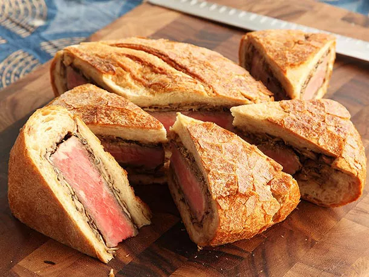

Shooters Sandwich Recipe

Description
If you don't know what a shooter's sandwich is by this point, here's an introduction. Its invention, according to Tim Hayward in the Guardian, came about when a clever cook decided to make a portable version of a beef Wellington by hollowing out a loaf of crusty bread, slathering it with mustard and horseradish, stuffing it with cooked steaks, mushrooms, and onions, then sealing them inside, wrapping the whole shebang in paper, and weighting it down overnight. The result is a flattened, compact sandwich firm enough to be packed in a saddle bag and sliced into wedges that can be consumed neatly, without any danger of it falling apart, even when you're simultaneously tracking a pheasant in the sights of your shotgun.
The original sandwich is an involved, but conceptually simple affair—steak, mushrooms, condiments—but since Hayward declared it "the best sandwich ever" in 2010, it's gone on to lead a life of its own, totally dominating the world of "look what I made!"-style blogs and Reddit posts, with each iteration one-upping the previous one with an ever-increasing number of toppings. The end result is something like this, a monster of a sandwich packed with Italian sausage, a bacon weave (an internet meme in and of itself), turkey, generic deli salami, muenster, pepper jack, and Swiss cheese slices, shredded Kraft mozzarella and cheddar cheeses, mustard, mayonnaise, basil, and dried oregano, all inside a loaf of tomato basil bread.
Ingredients
- 1 loaf hearty country bread, unsliced
- 3 tablespoons vegetable oil, divided
- 1 (3 pound) boneless beef round steak, 2 inches thick
- 1 onion, thinly sliced
- 2 cups sliced fresh mushrooms
- 1 clove garlic, minced, or to taste
- salt to taste
- ground black pepper to taste
- garlic salt to taste
Steps
- Cut a thick slice from the top of the loaf for a lid; use your fingers to pull the bread center out of the crust, leaving a thick shell. (Save the removed bread for another use.)
- Heat 1 tablespoon of vegetable oil in a large, heavy skillet over high heat until the oil is slightly smoking; lay the beef round steak into the hot skillet, and cook until the outside of the meat is browned and crusty and the inside is your desired degree of doneness, 5 to 8 minutes per side for medium-rare. Remove the steak, and set aside.
- Heat the remaining 2 tablespoons of vegetable oil in the skillet, and cook and stir the onion, mushrooms, and garlic until the onions are translucent and the mushrooms have given up their juice, 5 to 8 minutes. Remove from heat, and set aside.
- Lay the cooked steak into the hollowed-out bread loaf, and pile the onions, mushrooms, and garlic over the steak. Replace the bread "lid," and wrap the whole loaf in aluminum foil. Place the loaf onto a baking sheet; place a heavy flat weight on top of the loaf, such as a board or a heavy skillet, and weight the top with several bricks or jars of water.
- Place the loaf with its weights into the refrigerator, and chill and press the sandwich for at least 6 hours. To serve, bring to room temperature, and cut off slices of the loaf.